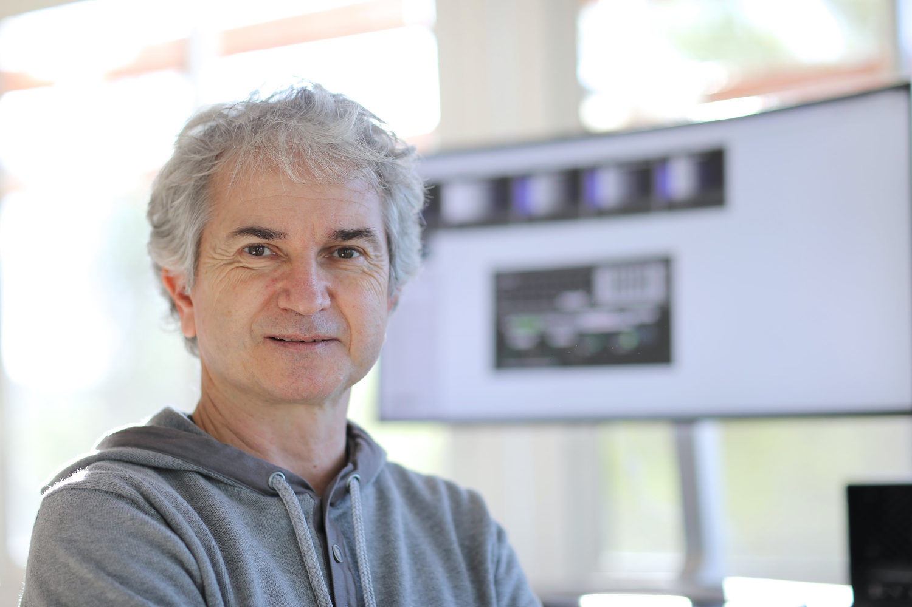

Program
This program is a work in progress and will be updated "on-the-fly" until the first day of JIMLAC-25.
Program Overview
| June 23 | June 24 | June 25 | June 26 | June 27 | June 28 | |||
| Morning |
JIM Sessions -- BMC |
JIM Sessions -- BMC |
JIM + ICCARE Joint Sessions -- BMC |
LAC Sessions -- BMC |
LAC Sessions -- BMC |
LAC Sessions -- BMC |
||
| Afternoon |
JIM Sessions -- BMC |
JIM Sessions -- BMC |
Workshop: Folia de Kaija Saariaho en Faust -- Astrée |
JIM Sessions -- BMC |
ICCARE Sessions -- BMC |
LAC Sessions -- BMC |
LAC Sessions -- BMC |
LAC Sessions -- BMC |
| Evening |
Concert 1: GNOMON Premiere -- Astrée |
Concert 2: Folia -- Astrée |
JIM + ICCARE + LAC Banquet With Live Electronic Music (Concert 3) -- CITI |
Concert 4: LAC Concert -- Astrée |
Concert 5: LAC Concert -- Astrée |
Concert 6: Live Electronic Music -- Le Sucre |
||
JIM-25
| General Events | Scientific Events | Workshops | Demos | Artistic Events | ICCARE |
| Pendant l'ensemble des JIMs (23-25 juin) | |||
|---|---|---|---|
| Horaire | Quoi | Qui | Où |
| Installations Sonores | |||
| 09:00 - 18:00 | Le temps des cloches -- Une installation sonore en hommage à Jean Lochard | Nadir Babouri | BMC (2ème étage) |
| Lundi 23 juin | |||
|---|---|---|---|
| Horaire | Quoi | Qui | Où |
| Ouverture des JIM-25 | |||
| 08:30 - 09:00 | Accueil/Enregistrement | BMC | |
| 09:00 - 09:30 | Discours de bienvenue | BMC | |
| Session 1 (JIM-25) : IA/Co-créativité/contrôle | |||
| 09:30 - 10:00 | A First Implementation of Somax2 Behaviours Using MORFOS Form, Segmentation and Organisation | Joséphine Calandra, Marco Fiorini, Gérard Assayag | BMC |
| 10:00 - 10:30 | Acoustic Augmentation of the Trumpet — Navigating Control and Unpredictability in a Long Term Art–Science Collaboration | Nicolas Souchal, Diemo Schwarz | BMC |
| 10:30 - 11:00 | Beyond Authorship: Human-AI Collaboration and Open Creative Process in Music | Chen Wang | BMC |
| 11:00 - 11:30 | Pause café | BMC | |
| Keynote 1 (JIM-25) | |||
| 11:30 - 12:30 | Défis énergétiques et écologiques de l'IA pour la création musicale | Constance Douwes | BMC |
| 12:30 - 14:00 | Déjeuner | Cantine INSA | |
| Session 2 (JIM-25) : Frugalité / Écologie / Pérennité | |||
| 14:00 - 14:30 | Frugal and Sustainable Digital Mindset for Music Vocational Education and Training | Andrea Bareggi, Simonetta Sargenti, Lamine Amour, Federico Bardazzi | BMC |
| 14:30 - 15:00 | Visualizing the Soundscape: an Approach at the Interface of Music and Ecology | Adèle De Baudouin, Jérôme Sueur, Pierre Couprie | BMC |
| 15:00 - 15:30 | Vers une préservation pérenne du répertoire des œuvres musicales avec électronique : développement du système Antony | Malena Fouillou, Serge Lemouton, Laurent Pottier, Jacques Warnier, Thomas Bottini, Alain Bonardi | BMC |
| 15:30 - 16:00 | Méthodologie de pérennisation des programmes informatiques utilisés pour les musiques mixtes et électroacoustiques avec Faust | Johann Philippe | BMC |
| 16:00 - 16:30 | Pause café | BMC | |
| Session AFIM/RFIM (JIM-25) | |||
| 16:30 - 17:00 | Séance pléninière conscarée à la RFIM | BMC | |
| 17:00 - 18:00 | Séance pléninière conscarée à l'AFIM | BMC | |
| Concert 1 - Session 1 (JIM-25) | |||
| 19:19 - 20:19 | Gnomon : performance sous dôme ambisonique, trompette et électronique immersive en temps réel | José Miguel Fernandez | Astrée |
| 19:19 - 20:19 | Synthetic Soundscape, pour dôme ambisonique | Nuria Giménez Comas | Astrée |
| Concert 1 - Session 2 (JIM-25) | |||
| 20:20 - 21:20 | Gnomon : performance sous dôme ambisonique, trompette et électronique immersive en temps réel | José Miguel Fernandez | Astrée |
| 20:20 - 21:20 | Synthetic Soundscape, pour dôme ambisonique | Nuria Giménez Comas | Astrée |
| Mardi 24 juin | |||
|---|---|---|---|
| Horaire | Quoi | Qui | Où |
| 09:00 - 09:30 | Accueil/Enregistrement | BMC | |
| Session 3 (JIM-25) : Espace | |||
| 09:30 - 10:00 | The Space Bar: an Embedded WFS Sound System | Benjamin Quiédeville, Romain Michon, Tanguy Risset, Stéphane Letz | BMC |
| 10:00 - 10:30 | Auralisation d'oeuvre in situ : entre enjeux techniques et musicaux | Paul Goutmann, Adrien Zanni | BMC |
| 10:30 - 11:00 | Spatialisation d'un concert de musiques actuelles amplifiées : étude de cas avec le groupe PRAETORIAN | Joseph Larralde, Pierrick Legrand | BMC |
| 11:00 - 11:30 | Pause café | BMC | |
| Keynote 2 (JIM-25) | |||
| 11:30 - 12:30 | Systèmes embarqués audio programmables : l'expérience du projet Emeraude | Tanguy Risset | BMC |
| 12:30 - 14:00 | Déjeuner | Cantine INSA | |
| Workshop (JIM-25) | |||
| 14:00 - 16:00 | Workshop: Étude de cas - le portage du programme informatique de Folia de Kaija Saariaho en Faust | Johann Philippe | Astrée |
| Session 4 (JIM-25) : Instrument/Geste | |||
| 14:00 - 14:30 | Sonorisation des instruments à cordes frottées :identité sonore et traitement par modèle physique pour la prise de son par contact | François Longo, Benoît Fabre, Benoît Navarret | BMC |
| 14:30 - 15:00 | Les enfants et les pratiques d'invention au piano augmenté par les moyens informatiques | Catherine Schneider | BMC |
| 15:00 - 15:30 | A Gesture-Centered Real-Time Composition Ecosystem for Augmented Musical Instruments | Alessandro De Cecco | BMC |
| 15:30 - 16:00 | Vers une Taxonomie et une Analyse des Gestes Guitaristiques dans le Brutal Death Metal | Quentin Guilluy, Anis Fariji, Joao Fernandes, Mathieu Giraud, Alexandre D'Hooge, Emmanuel Leguy | BMC |
| 16:00 - 16:30 | Pause café | BMC | |
| Session 5 (JIM-25) : Web/Langage | |||
| 16:30 - 17:00 | Applications audio Web avec Faust : innovations techniques au service de la transmission | Stéphane Letz, Jeanne Ribeau | BMC |
| 17:00 - 17:30 | Pharo Sound Design: Adding Auditory Feedback to a Live Programming Environment | Domenico Cipriani, Gabriel Darbord | BMC |
| 17:30 - 18:00 | Vers un Métavers Musical Collaboratif : expériences Web Multi-Participants | Michel Buffa, Quentin Escobar, Ayoub Hofr | BMC |
| 18:00 - 18:30 | Du Samchillian au DBL temps réel : conception d'un instrument de musique fondé sur l'évolution des degrés | Emanuele Di Mauro | BMC |
| Concert 2 (JIM-25) | |||
| 19:19 - 20:19 | Testudo pour contrebasse et électronique | Yannis Kyriakides | Astrée |
| 19:19 - 20:19 | Présence pour contrebasse et électronique | Raphaèle Biston | Astrée |
| 19:19 - 20:19 | Folia pour contrebasse et électronique | Kaija Saariaho | Astrée |
| Mercredi 25 juin | |||
|---|---|---|---|
| Horaire | Quoi | Qui | Où |
| 08:30 - 09:00 | Accueil/Enregistrement | BMC | |
| 09:00 - 09:10 | Intro ICCARE | BMC | |
| Session ICCARE 1 (JIM-25) : Outils et pratiques de l'IA | |||
| 09:15 - 10:00 | Keynote 1 | François Pachet (Spotify) | BMC |
| 10:00 - 10:45 | Keynote 2 | Mathieu Barthet (AMU) | BMC |
| 10:45 - 12:25 | Pause café + démos | BMC | |
| 10:45 - 12:25 | Démo : Allendia – Explorer de nouveaux territoires sonores avec l'aléatoire | Hugo Chateau-Laurent (Inria) | BMC - coin café |
| 10:45 - 11:15 | Démo : Composer l'interaction avec des processus génératif, duo C'est pour ça | Jérôme Nika (IRCAM), Rémi Fox (musicien) | BMC |
| 11:20 - 11:50 | Démo : Netz - an XR Musical Instrument | Max Graf (QMUL/AMU) | BMC |
| 11:55 - 12:25 | Démo : IA générative pour la Création musicale | Jean Louis Hennequin (YNOV Campus) | BMC |
| 12:30 - 14:00 | Déjeuner | Cantine INSA | |
| Session ICCARE 2 (JIM-25) : Outils et pratiques de l'immersion sonore | |||
| 14:00 - 14:45 | Keynote 3 : Ouvrir l'espace sonore | Alain Bonardi (Paris 8) | BMC |
| 14:45 - 15:30 | Keynote 4 : Outils d'artiste, outils de structure culturelle, et intersections pour les publics | Jérôme Villeneuve (Hexagone Meylan), Eric Raynaud (Artiste indépendant et associé à l'Hexagone) | BMC |
| 15:30 - 16:00 | Pause café | BMC | |
| 16:00 - 16:30 | Démos : Exemples de représentations opératoires pour le traitement spatial du son | Paul Goutmann (Paris 8) | BMC |
| 16:30 - 17:00 | Démos : Spatialisation d'un groupe de musiques actuelles amplifiées : étude de cas avec le groupe Praetorian | Joseph Larralde (Université de Bordeaux) | BMC |
| 17:00 - 17:15 | Conclusion de la session spéciale ICCARE | BMC | |
| Session 6 (JIM-25) : Logiciel/Langage | |||
| 14:00 - 14:30 | Partiels : un logiciel pour analyser et explorer le son | Pierre Guillot | BMC |
| 14:30 - 15:00 | Kandiskyscore | Dominique Blanchemain | BMC |
| 15:00 - 15:30 | Contrôle temporel des sous-partitions de fichiers MIDI | Bernard Serpette, Joseph Larralde, Jean Haury, Myriam Desainte-Catherine | BMC |
| 15:30 - 16:00 | Pause café | BMC | |
| Session 7 (JIM-25) : Synthèse/Analyse | |||
| 16:00 - 16:30 | Shaping Musical Textures With TEIA: Investigating Spectral and Dynamic Features In a Live Electronics Performance Tool | Micael Antunes da Silva | BMC |
| 16:30 - 17:00 | The Brain Orchestra, un outil de sonification de l'activité neuronale | Vincent Goudard, Sebastien Wolf | BMC |
| 17:00 - 17:30 | Cérémonie de clôture de JIM-25 | BMC | |
| Banquet/Party (JIM-25 + LAC-25) | |||
| 18:30 - 23:00 | Banquet BBQ Auvergnat Electro (en commun avec ICCARE et LAC-25: voir le programme détaillé) | CITI | |
Keynote 1: Constance Douwes
Défis énergétiques et écologiques de l'IA pour la création musicale
Résumé : Ces dernières années ont été marquées par la prolifération de l’intelligence artificielle (IA) dans une multitude d’applications, et le domaine de l’informatique musicale n’y échappe pas. Mais derrière l’apparente immatérialité des algorithmes se cache une réalité bien plus concrète : celle d'une consommation énergétique massive et d’une utilisation intensive des ressources en eau et en métaux rares, qui engendrent des coûts environnementaux non négligeables. Dans cet exposé, je propose une introduction aux enjeux écologiques liés à l’usage des réseaux de neurones et j'étudie plus en profondeur les coûts énergétiques associés à l'entraînement et au déploiement de l'IA générative pour l'audio, tout en réfléchissant à la manière de concilier qualité sonore et consommation énergétique. J'espère ainsi éveiller les consciences et donner des clefs vers une IA plus frugale pour la création musicale.
| Bio : Constance Douwes est docteure en informatique spécialisée en intelligence artificielle (IA). Elle a effectué son doctorat à l'IRCAM au sein du laboratoire STMS où elle a étudié la consommation énergétique des réseaux de neurones appliqués à la génération audio. Elle a ensuite poursuivi ses recherches lors d’un post-doctorat à l'Inria Nancy, et travaillé sur l'efficacité énergétique des systèmes de détection d’événements sonores. Elle est actuellement post-doctorante au laboratoire d'informatique et systèmes de l'Université Aix-Marseille, où elle continue d’explorer les impacts environnementaux de l’IA. |
Keynote 2: Tanguy Risset
Systèmes embarqués audio programmables : l'expérience du projet Emeraude
Résumé : Avec la fin de la loi de Moore, l’architecture des calculateurs haute performance se complexifie (GPU, FPGA et autres accélérateurs matériels) afin de continuer à gagner en performance. Dans le même temps, les systèmes embarqués intègrent des processeurs de plus en plus puissants, initialement conçus pour des machines de bureau, mais désormais accessibles dans l’embarqué grâce à la diminution de la taille de gravure, ce qui permet une faible consommation énergétique. On dispose aujourd’hui, dans les systèmes embarqués du quotidien, de processeurs 32 bits accompagnés d’une quantité raisonnable de mémoire, rendant possibles des applications complexes ainsi que l’utilisation de systèmes d’exploitation comme Linux. De nombreuses technologies — GPU, FPGA, NPU — sont aujourd’hui candidates à l’intégration dans ces systèmes, ouvrant de nouvelles perspectives, notamment pour les applications audio embarquées.
Grame travaille depuis plusieurs années sur les systèmes audio embarqués, en développant de nombreux dispositifs fondés sur le langage Faust — comme le Gramophone, par exemple — mais en restant en marge du paysage académique "officiel" de l’informatique en France. De son côté, le laboratoire CITI a développé une expertise en compilation pour systèmes embarqués, notamment sur FPGA. L’équipe-projet commune Insa-Lyon/Inria/Grame vise à intégrer les travaux de recherche menés chez Grame dans un cadre académique institutionnel, en lien avec l’Insa de Lyon et l’Inria, afin de concevoir de nouveaux objets audio embarqués, notamment sur FPGA, à partir du langage Faust.
Cet exposé présentera les premiers résultats de l’équipe Emeraude, notamment ceux permettant la réalisation de systèmes audio à très faible latence ou capables de gérer un grand nombre de canaux à faible coût grâce aux FPGA.
| Bio : Tanguy Risset est professeur en informatique au département Télécommunications de l’INSA Lyon. Il est actuellement responsable de l’équipe commune Insa-Lyon/Inria/Grame Emeraude, qui travaille sur les systèmes audio embarqués programmables. Ses domaines de recherche incluent la compilation, les systèmes embarqués, la parallélisation automatique et la programmation sur FPGA. Après sa formation à l’ENS Lyon, il a soutenu sa thèse en 1994 sur les techniques de conception de réseaux systoliques leur lien avec la parallélisation de boucles et le modèle polyédrique. Il a ensuite travaillé pendant sept ans comme chercheur Inria dans l’équipe API de Patrice Quinton à Rennes, où il a notamment participe au développement du système MMAlpha. Il a obtenu son habilitation à diriger des recherches en 2000, puis est revenu à Lyon pour créer l’équipe Compsys (Inria/ENS Lyon), en collaboration avec Alain Darte et Paul Feautrier, autour de la compilation pour systèmes embarqués. Il a obtenu un poste de professeur à l'Insa de Lyon en 2005 et, en 2011, il a cofondé avec Jean-Marie Gorce l’équipe Socrate (Insa-Lyon/Inria), qui s’est spécialisée dans la radio logicielle (software-defined radio). L’équipe Socrate a construit la plate-forme expérimentale radio CorteXlab, dans le cadre de l’équipement d’excellence FIT (Future Internet of Things). En 2020, il a initié une collaboration avec Grame autour des systèmes audio embarqués et des FPGA, qui a conduit à la création de l’équipe Emeraude en 2022. |
LAC-25
| General Events | Scientific Events | Workshops | Demos | Artistic Events |
| Wednesday, June 25 | |||
|---|---|---|---|
| Time | What | Who | Where |
| Banquet BBQ Auvergnat Electro (JIM-25 + LAC-25) | |||
| 20:00 - 23:00 | RESIDUUM | Thomas Mayer | CITI |
| 20:00 - 23:00 | A fashionable nightclub | Jean-Basile Sosa | CITI |
| 20:00 - 23:00 | Eigenform | Artem Popov | CITI |
| 20:00 - 23:00 | Station 2: Feuilledalle | Michal Seta, Dirk Stromberg | CITI |
| 20:00 - 23:00 | CRISPRave | Niklas Reppel | CITI |
| Thursday, June 26 | |||
|---|---|---|---|
| Time | What | Who | Where |
| LAC-25 Opening | |||
| 08:30 - 09:00 | Welcome/Registration | BMC | |
| 09:00 - 09:30 | Welcome Speech | BMC | |
| Session 1 (LAC-25) - Chair: Yann Orlarey | |||
| 09:30 - 10:00 | A Libre Software Framework for Extended Reality Musical Instruments and Sonic Installations | Florent Berthaut | BMC |
| 10:00 - 10:30 | A Modular Ecosystem for Audio-Visual Augmented Reality Performances | Henrik Von Coler | BMC |
| 10:30 - 11:00 | algojuggledrums - Creating Rhythms from Juggling Patterns | Albert Gräf, Sophia Renz | BMC |
| 11:00 - 11:30 | Coffee Break | BMC | |
| Keynote (LAC-25) | |||
| 11:30 - 12:30 | Making music in the web browser, the Web Audio Module ecosystem | Michel Buffa | BMC |
| 12:30 - 14:00 | Lunch | Cantine INSA | |
| Session 2 (LAC-25) - Chair: Victor Lazzarini | |||
| 14:00 - 14:30 | AUD-SUR: An Audio Analyzer Assistant for Audio Surveillance Applications | Lam Pham, Martin Boyer, Schindler Schindler, Silvia Poletti, Marcel Hasenbalg, David Fischinger, Phat Lam, Dat Trans | BMC |
| 14:30 - 15:00 | AudioReach: An End-to-End Solution | Patrick Lai | BMC |
| 15:00 - 15:30 | AVB for (Linux) Dummies | Fernando Lopez-Lezcano, Nils Tonnätt | BMC |
| 15:30 - 16:00 | Bridging Musical Gesture and Computational Representation: Designing Gesture Composition Framework | Markidis Marco Matteo | BMC |
| Coffe Break and Demo Session (LAC-25) | |||
| 16:00 - 17:00 | AudioReach: An End-to-End Audio Solution | Patrick Lai | BMC |
| 16:00 - 17:00 | Free & Open Tools for Dante Protocol, Made Through Reverse Engineering | Teodor Wozniak | BMC |
| 16:00 - 17:00 | Native Wayland Audio Plug-In User Interfaces | Julian Wolff | BMC |
| Workshop 1 (LAC-25) | |||
| 17:00 - 18:30 | Workshop: Ardour Lua Scripting | Robin Gareus | BMC |
| Concert 1 (LAC-25) | |||
| 19:19 - 21:19 | A Jar, a Terracotta Pot, and Plenty of Room for Improvement | Niklas Reppel | Astrée |
| 19:19 - 21:19 | Extense -- Audio Augmented Trumpet | Nicolas Souchal, Diemo Schwarz | Astrée |
| 19:19 - 21:19 | Persistances (2024) | Alessandro De Cecco | Astrée |
| 19:19 - 21:19 | Travelling Without Moving | Stefano Catena | Astrée |
| 19:19 - 21:19 | The Well Modulated Dinosaur | Fernando Lopez-Lezcano | Astrée |
| 19:19 - 21:19 | Résurgences (2022) | Alessandro De Cecco | Astrée |
| Friday, June 27 | |||
|---|---|---|---|
| Time | What | Who | Where |
| 08:45 - 09:15 | Welcome/Registration | BMC | |
| Session 3 (LAC-25) - Chair: Albert Gräf | |||
| 09:15 - 09:45 | BuGUI: A Widget System for Button Grid Controllers | Thibaud Keller, Victor Lazzarini, Gordon Delap, Jean-Michaël Celerier | BMC |
| 09:45 - 10:15 | Composing Resilient Software: Architectural Evolution and Collaborative Governance in JackTrip's Open-Source Journey | Sven Thielen, Chris Chafe | BMC |
| 10:15 - 10:45 | CSOUND 7: Bare Metal and Co-Processing Hardwares | Victor Lazzarini, Aman Jagwani | BMC |
| 10:45 - 11:15 | Coffee Break | BMC | |
| Session 4 (LAC-25) - Chair: Victor Zappi | |||
| 11:15 - 11:45 | Enhancing Interactive Communication with the OVBOX: New Features and Applications in Hearing Research | Giso Grimm, Volker Hohmann | BMC |
| 11:45 - 12:15 | Polyphonic: FPGA-Based Hardware for Saptial Audio | Maxime Popoff | BMC |
| 12:15 - 13:30 | Lunch | Cantine INSA | |
| Session 5 (LAC-25) - Chair: Henrik von Koler | |||
| 13:30 - 14:00 | Inside Andrea Molino's La vérité, pas toute: The Creation of Swarm Sounds | Nicola Bernardini, Alvise Vidolin, Luca Richelli, Alessandro Fiordelmondo, Mattia Pizzato | BMC |
| 14:00 - 14:30 | Linux Audio on Android | Victor Zappi | BMC |
| 14:30 - 15:00 | MFP: A graphical patcher extensible in Python and Faust | Bill Gribble | BMC |
| 15:00 - 15:30 | Pd-Lua Signals and Graphics | Albert Gräf, Timothy Schoen, Benjamin Wesch | BMC |
| 15:30 - 16:00 | Coffe Break | BMC | |
| Workshop 2 (LAC-25) | |||
| 16:00 - 18:45 | C++ Audio Development on Android with LDSP | Victor Zappi, Carla Tapparo | BMC |
| Concert 2 (LAC-25) | |||
| 19:19 - 21:19 | 3D Illusory Immersive Soundscape: Lava's Roaring Dance | Zoe (yi-Cheng) Lin | Astrée |
| 19:19 - 21:19 | In Praise of Shadows | Kerem Ergener | Astrée |
| 19:19 - 21:19 | VoceST II | Massimo Fragala | Astrée |
| 19:19 - 21:19 | Campi Instabili | Marco Matteo Markidis | Astrée |
| 19:19 - 21:19 | ΣCUBE | Henrik Von Coler | Astrée |
| Saturday, June 28 | |||
|---|---|---|---|
| Time | What | Who | Where |
| 09:00 - 09:30 | Welcome/Registration | BMC | |
| Session 6 (LAC-25) - Chair: Thomas Rushton | |||
| 09:30 - 10:00 | Raptor, the Random Arpeggiator Version 7 | Albert Gräf | BMC |
| 10:00 - 10:30 | Real-Time Musical Instruments Recognition for Scenography Purposes | Hugues Kadi, Mathis Devidal, Romain Michon, Johan Erbani | BMC |
| 10:30 - 11:00 | Reviving the Heavy Compiler: From Abandonment to Ownership | Alexander Chalikiopoulos | BMC |
| 11:00 - 11:30 | Coffee Break | BMC | |
| Session 7 (LAC-25) | |||
| 11:30 - 12:00 | Spatial Room Impulse Response Extrapolation Using the Image Source Method | Zhenxian Li, Thomas McKenzie | BMC |
| 12:00 - 12:30 | Tape Simulation | Fons Adriaensen | BMC |
| 12:30 - 14:00 | Lunch | Cantine INSA | |
| Session 8 (LAC-25) | |||
| 14:00 - 14:30 | Using Android smartphones to control music software with OpenSoundControl (OSC) using Sensors2OSC | Thomas Mayer | BMC |
| 14:30 - 15:00 | WebPdL2Ork: Bringing the Linux Laptop Orchestra to the Browser | William Furgerson, Ivica Bukvic, Justin Kerobo, Bradley Davis | BMC |
| 15:00 - 15:30 | Zita-at2 Autotune | Fons Adriaensen | BMC |
| 15:30 - 16:00 | Coffe Break | BMC | |
| Workshop 3 (LAC-25) | |||
| 16:00 - 17:30 | Yoshimi Insights and Developments | Will Godfrey | BMC |
| 17:30 - 18:00 | LAC-25 Closing Ceremony | BMC | |
| Concert 3 (LAC-25) | |||
| 20:00 - 22:00 | TBA | TBA | Le sucre |
Keynote: Michel Buffa
Making music in the web browser, the Web Audio Module ecosystem
Web Audio Modules (WAMs) is today the main open source standard for developing WebAudio plugins (aka "VSTs for the Web"). This presentation will present the WAM ecosystem along with many live demonstrations.
WAM Features:
- Supports audio, midi, video, OSC,
- Supports third-party module loading across websites, a WAM is identified by a single URI, and can be dynamically loaded in host applications,
- Works in all major browsers including iOS Safari,
- Supports WebAudio, WebGL2, WebMIDI,
- Can be written using many different workflows, JavaScript, TypeScript, using front-end frameworks, DSP part can be cross compiled to WebAssembly from Domain Specific Languages like FAUSTCm, Csound or Cmajor
- Can be headless or with multiple GUIs, including 3D GUIs,
- Support many extensions (parameter modulation, video, 3D, assets, etc.)
- wam-community: over 60 WAM2 plugins ready to integrate into your project.
|  | Bio : Michel Buffa is a full professor and researcher at Université Côte d'Azur, and a member of the SPARKS research group within the I3S Laboratory (CNRS). He has played a key role in the development of the Web Audio research field, having participated in all Web Audio Conferences and served on every program committee from 2015 to 2019. He collaborates actively with the W3C Web Audio Working Group and co-created, alongside other researchers and developers, the Web Audio Modules (WAM) standard—a kind of “VST for the web.” He has authored numerous international publications in the Web Audio domain, a field he helped pioneer. With his team, he has developed many WAM plugins and a full-featured online digital audio workstation (DAW). More recently, he has begun working on the "Musical Metaverse," developing real-time, multi-user musical applications that run directly in web browsers on immersive devices. |